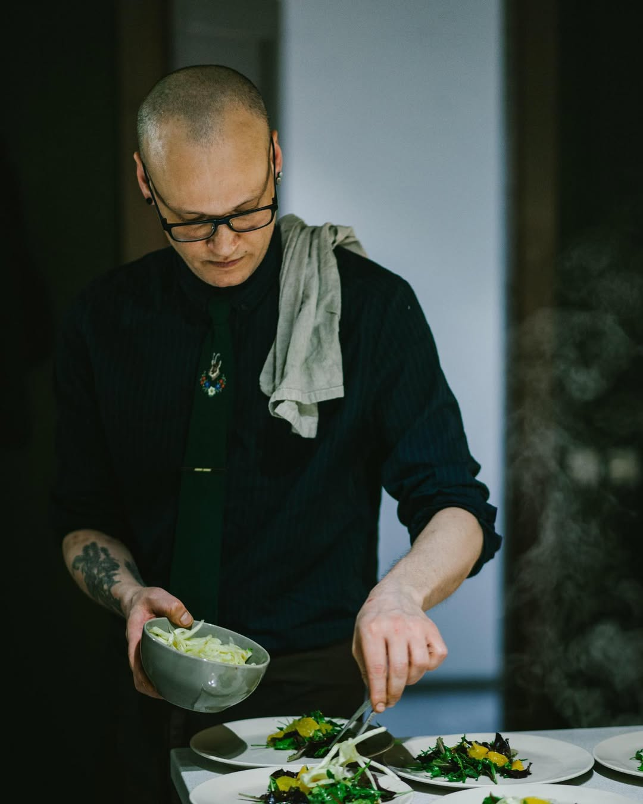

Desde 2011, me he dedicado a crear y fotografiar deliciocas recetas veganas. Mi pasión por la cocina comenzó en mi infancia, y desde entonces, he estado explorando nuevas formas de crear platos deliciosos y saludables.
A lo largo de los años, he perfeccionado mis habilidades en la cocina y he compartido mis recetas con una comunidad global de entusiastas de la comida. Me inspiro en sabores de todo el mundo y siempre estoy buscando nuevas ideas para mis platos
¡Sígueme en mis redes sociales para más contenido vegano!